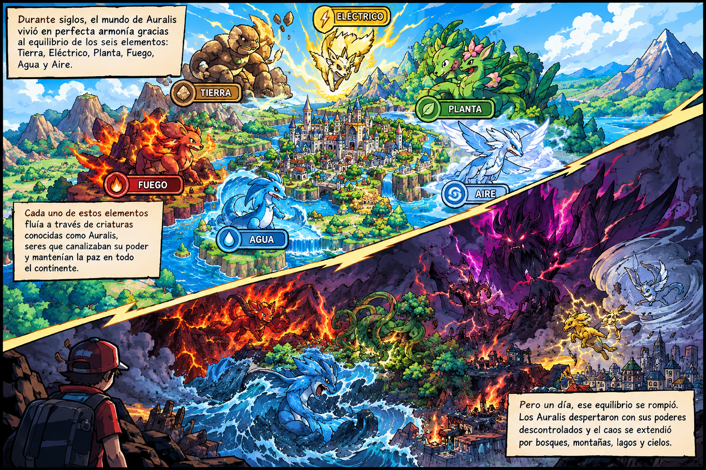

El Desequilibrio

historia-1.png
Durante siglos, el mundo de Auralis vivió en perfecta armonía gracias al equilibrio de los seis elementos: Tierra, Eléctrico, Planta, Fuego, Agua y Aire.
Cada uno de estos elementos fluía a través de criaturas conocidas como Auralis, seres que canalizaban su poder y mantenían la paz en todo el continente.
Pero un día, ese equilibrio se rompió. Los Auralis despertaron con sus poderes descontrolados y el caos se extendió por bosques, montañas, lagos y cielos.
▼